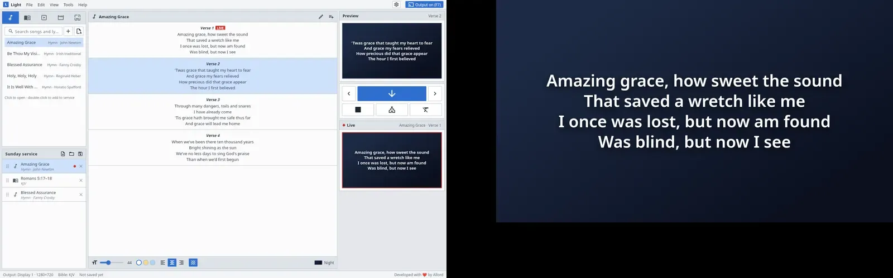
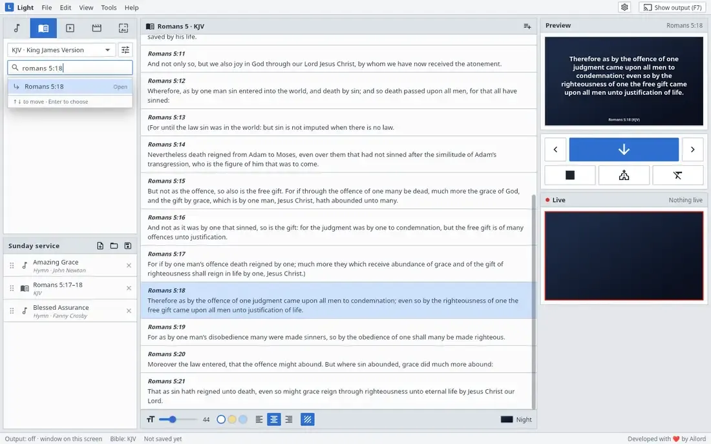
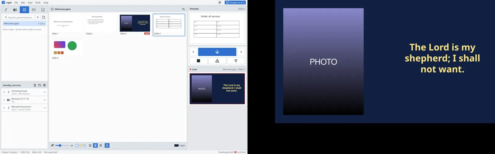
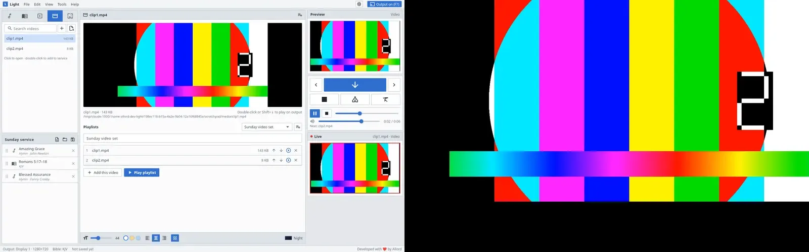
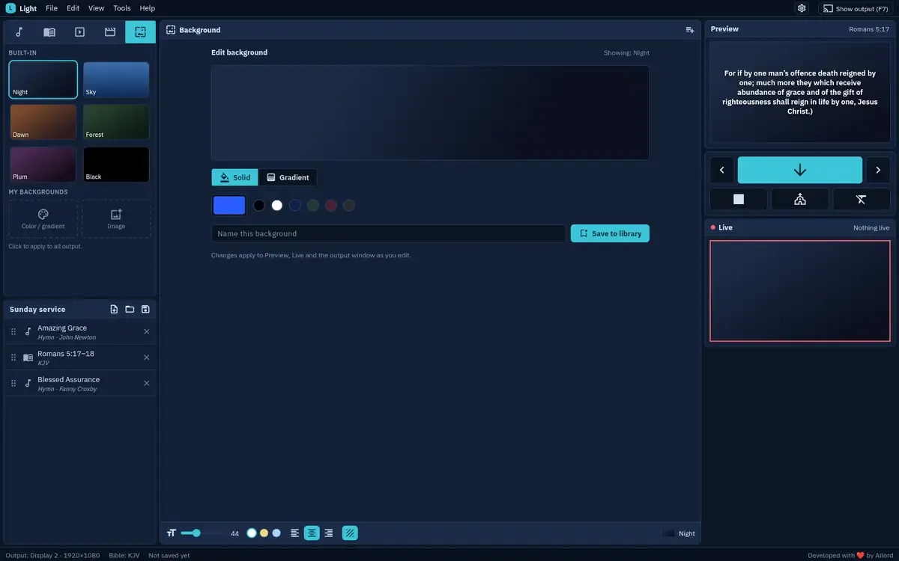

Lyrics, verse by verse
Pick a song and step through its verses. The congregation sees only the words, large and clean.

Own product, built for churches · Desktop app
Worship presentation for churches: lyrics, scripture, slides and video on the projector.

On a Sunday the person at the laptop has one job: put the right words on the screen at the right moment. Light is built around that person. Build the order of service, then click through songs, Bible passages, PowerPoint decks and videos while the congregation sees a clean, full-screen output on the second display.
Order of service on the left, preview in the middle, live output on the right. Nothing hidden behind menus.
The output opens full screen on the projector and follows it when it is unplugged and plugged back in.
Zefania, OSIS, USFM, USFX, MyBible, MySword, e-Sword and SWORD. The King James Version is included.
.pptx and .ppsx become slides inside the app. Older formats go through LibreOffice.
MP4, MKV, MOV, WebM and more, with FFmpeg bundled. Nothing extra to install.
Drop files from the file manager straight into the service.
Pick a song and step through its verses. The congregation sees only the words, large and clean.

Type a reference and the passage is ready. Every verse is one click away from the screen.

Decks are converted into slides with their images, so they show on the same output as everything else.

Announcements and clips play full screen on the projector, with the operator still in control.

Set the look once: background, colours and logo, previewed before anyone sees them.

Tell me what you need. I'll tell you honestly how I'd build it, how long it would take and what it would cost.